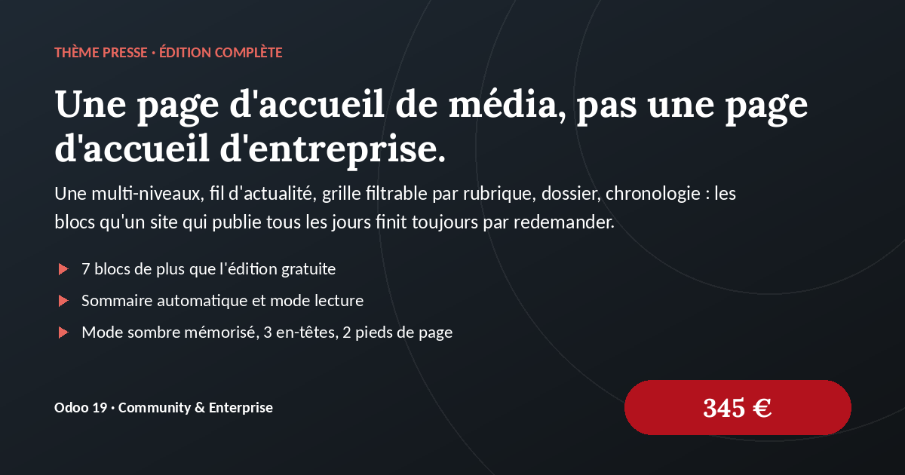
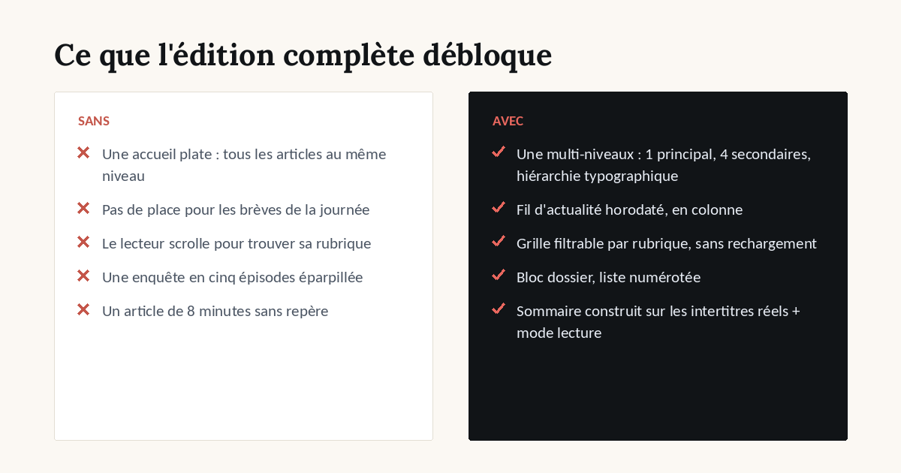
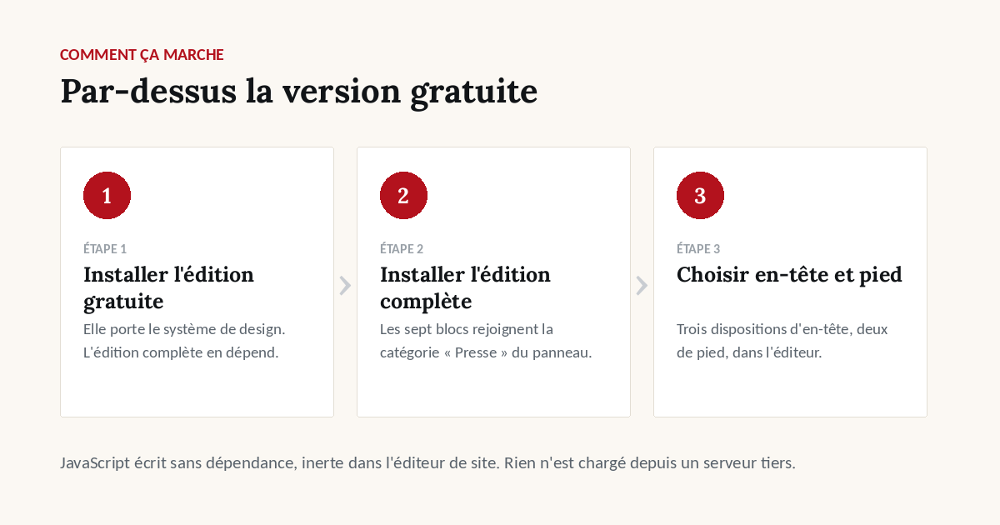

Voir avant d'installer
Trois des sept blocs supplémentaires

Article avec sommaire et mode lecture

Le système de design



1 article principal + 4 secondaires
entrées horodatées en colonne
filtrage côté navigateur, sans configuration
liste numérotée
portrait, biographie, liens
frise date / contenu
gabarit d'inscription
construit sur les h2/h3 réels de l'article
interligne élargi, colonne latérale masquée
manuel ou selon la préférence système
choisis dans l'éditeur
/rubrique-economie et /auteur-camille-ferrand
fond crème dominant

JavaScript écrit sans dépendance, inerte dans l'éditeur de site. Rien n'est chargé depuis un serveur tiers.
Trois des sept blocs supplémentaires
Article avec sommaire et mode lecture
Le système de design
Autant le savoir avant l'achat qu'après.
Odoo 19.0, Community et Enterprise.
Support et questions avant achat :
welcome@dyonysos.fr
https://dyonysos.fr